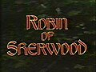

Robin of Sherwood (1984)
Source Card

Photo

Robin of Sherwood is a British television series, based on the legend of Robin Hood. Created by Richard Carpenter, it was produced by HTV in association with Goldcrest, and ran from 28 April 1984 to 28 June 1986 on the ITV network. In the United States it was shown on the premium cable TV channel Showtime and, later, on PBS. It was also syndicated in the early 1990s under the title Robin Hood.
External Links
This page aggregates references to the source material behind Name Lore entries.